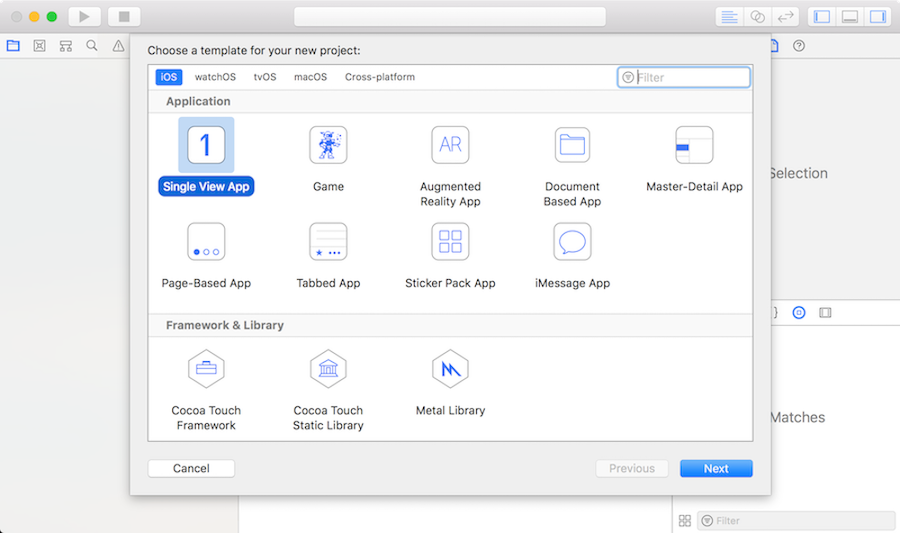
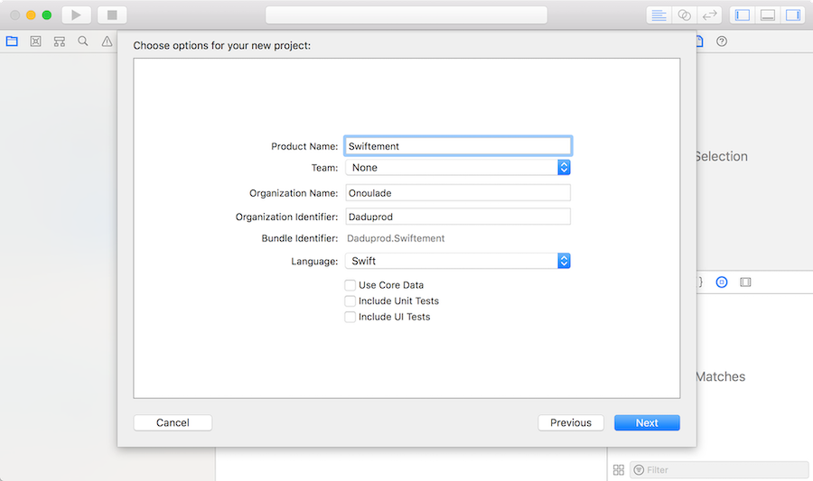
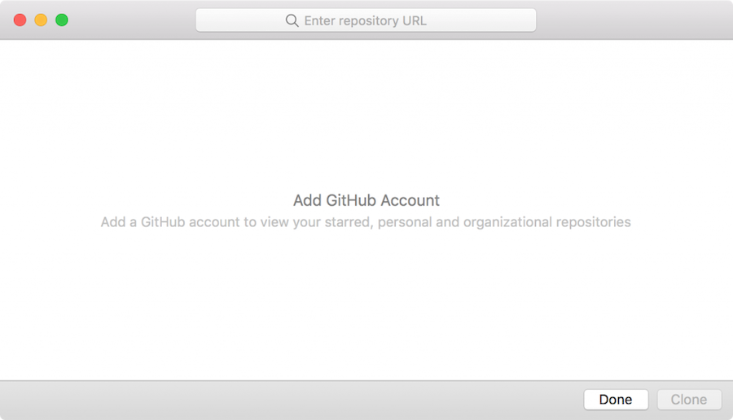
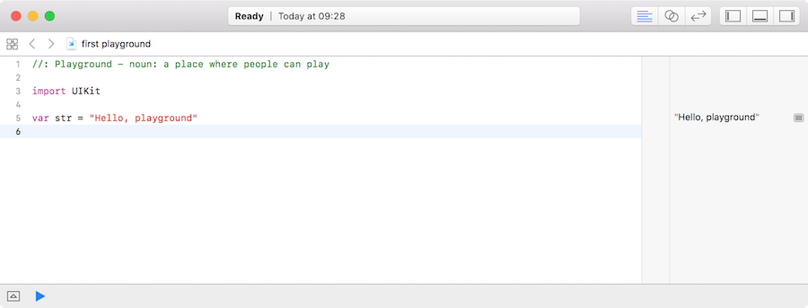
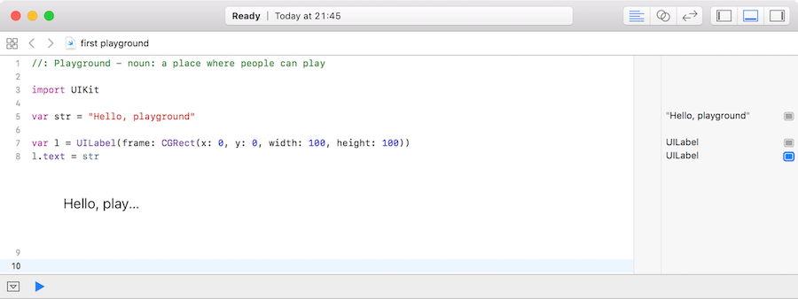

Un playground est un environnement dans lequel on va pouvoir exécuter du code swift en direct sans avoir à le contenir dans une application. C’est un moyen simple et rapide d’obtenir une exécution d’un code que l’on entre.
Il est également possible de démarrer un nouveau projet d’app pour les différents systèmes disponibles. Xcode nous ouvre alors une fenêtre très similaire à celle de création des playgrounds où l’on peut choisir le système d’exploitation et un modèle prédéfini de programme. Les modèles prédéfinis permettent de paramétrer le compilateur et le projet pour ce type spécifique de programme. Par exemple une librairie Metal ne va pas se compiler de la même façon qu’un pack de stickers iMessage. C’est ici que l’on choisit le type d’application que l’on désire. Il est intéressant de noter qu’il est possible de créer des jeux multi-plateformes ainsi que des achats in-app. C’est également ici que l’on va trouver la possibilité de créer un projet totalement vierge ou un compilateur personnalisé. Si par exemple on choisit une “Single View App” et que l’on clique sur suivant, on arrive sur l’écran des options du projet.

On peut dans cette fenêtre nommer son application, nommer le développeur, définir le langage principal de l’application et choisir d’inclure par défaut des modèles de tests et de données.

Ce menu permet de télécharger un projet depuis un repository comme GitHub. Ceci est très utile pour des travaux à plusieurs ou pour du versionnage. Il est possible aussi d’avoir un aperçu direct des repo sur son propre compte GitHub en se connectant dans les préférences de l’application. Si l’on souhaite télécharger une repo depuis internet, il suffit de copier son URL dans le champ de recherche en haut de la fenêtre puis de l’enregistrer dans ses documents.

Lorsque l’on crée ou que l’on lance un playground, Xcode doit d’abord mettre en place l’environnement de développement et lancer le simulateur d’OS. Comme tout le code que nous écrirons sera exécuté en temps réel, tout a besoin d’être prêt dès l’ouverture du fichier.Une fois le simulateur chargé, le playground est prêt à fonctionner (la barre d’état affiche maintenant Ready et on peut voir dans la colonne de droite un sympathique "Hello, playground"" nous indiquant que le code s’exécute correctement.En créant un playground vide, on s’aperçoit qu’il n’est pas si vide que ça, il y a déjà trois lignes de code écrites à l’intérieur de l’éditeur de code (1). La première est un commentaire, elle n’est donc pas exécutée. La seconde, import UIKit , permet d’importer le framework d’interface utilisateur graphique (User Interface Kit) et rends ses classes et méthodes accessibles dans le playground. La troisième, var str = "Hello, playground" , déclare une nouvelle variable nommée str et lui donne la valeur Hello, playground.

Dans la deuxième ligne, on attribue la valeur de la variable str déclarée plus haut comme texte de ce label. Ainsi, on peut voir sur la visualisation graphique de la seconde ligne notre texte écrit dans la typographie système dans notre carré, et il y a même des points de suspension car le label a calculé tout seul que la longueur du texte a afficher était plus longue que le conteneur dans lequel il devait rentrer. Cela fait partie des fonctions intégrée d’un des objets disponibles dans UIKit. Voici rapidement à quoi servent les playgrounds en fin de compte : ils permettent d’obtenir un résultat quasi immédiat de notre code sans avoir à utiliser d’émulateur de système, de matériel supplémentaire ou même de tous les réglages nécessaires à une application. Il nous permet de jouer avec le code et de tester des choses sans se prendre la tête.
